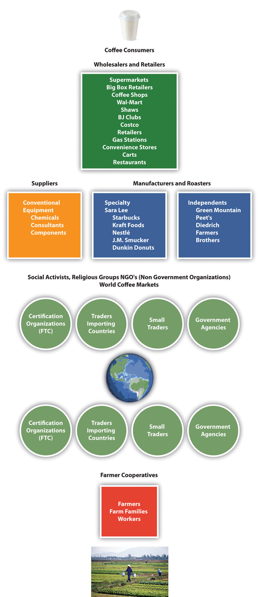

Coffee has been consumed for centuries ever since the coffee bean was first cultivated and used by Arabs as a beverage in the fifteenth century.“Ethiopia: Coffee History, Production, Economy Facts,” Tree Crops, accessed May 30, 2010, http://www.gmcr.com/PDF/gmcr_csr_2008.pdf. First discovered and cultivated in Ethiopia, the Arabica bean found its way to coffee houses in the Middle East and spread throughout Europe in the sixteenth century. Aided by Western colonialism, religious missionaries, and explorers to other tropical and subtropical regions of the world, the Arabica bean and the less valuable Robusta bean eventually became global crops. Coffee trees only grow in tropical and subtropical climates, primarily in Africa, Latin America, and Asia. One coffee tree produces one pound of green coffee per year. There are two types of coffee: specialty and conventional (basic). Specialty coffee is made from the Arabica bean and basic from the Robusta bean. Often times these beans are blended together in the roasting process to lower costs or offer greater variety.
The International Coffee Organization (ICO) estimated that approximately 1.4 billion cups of coffee were poured each day worldwide in 2008.Robert S. Lazich, ed., Market Share Reporter: An Annual Complication of Reported Market Share, Data on Companies, Products, and Services (Farmington Hills, MI: Gale, 2009), 1:191–92. The United States is the single largest consumer of coffee worldwide and is the largest importer of green (before roasting) coffee, approximately 2.5 million bags per month. In 2009 Germany was the second largest importer of coffee, followed by Italy, Japan, and France. Combined, the European Union countries imported approximately 5.4 million bags a month in 2009. The largest green coffee producing countries (2007–8) were Brazil, Vietnam, Colombia, Indonesia, and Ethiopia. (See Figure 9.1 "Coffee Global Supply Chain".)
More than 50 percent of Americans older than eighteen years of age drink coffee every day. This represents more than 150 million daily drinkers. Thirty million American adults drink specialty coffee beverages daily, which include mocha, latte, espresso, café mocha, cappuccino, and frozen or iced coffee beverages. The United States imports in excess of $4 billion worth of coffee per year. Americans consume four hundred million cups of coffee per day, making the United States the leading consumer of coffee in the world. (See the following sidebar.)
Did You Know?
Source: “Coffee Statistics Report—2012 Edition,” Top 100 Espresso, http://www.top100espresso.com.
Roasters compete primarily on price, brand, and differentiation. The price of green coffee is based on basic supply and demand economic factors. Supply is dependent on several factors including weather, pest damage, politics, and economics in the coffee-producing countries. Demand for coffee depends on several factors, including consumer preferences; changes in consumer lifestyles; national, regional, and local economic conditions; demographic trends; and health benefits or risks.
An industry supply chainA supply chain is a system of organizations, people, technology, activities, information, and resources involved in moving a product or service from supplier to customer. Supply chain activities transform natural resources and raw materials and components into a finished product that is delivered to the end customer. In sophisticated supply chain systems, used products may reenter the supply chain at any point where residual value is recyclable. Supply chains link value chains. describes the processes (steps) by which a product is produced and ends up with (final) consumers. The green (unroasted) coffee bean travels through many steps in the supply chain (also known as the value chain) from harvest to final customer. A summary of some of the key players found in the value chain is presented in Figure 9.1 "Coffee Global Supply Chain". Coffee roasters or manufacturers are the key or focal player in the coffee supply chain.
Figure 9.1 Coffee Global Supply Chain
Source: Image courtesy of the authors.
The largest US domestic coffee brandsA name, term, sign, symbol, design, or a combination of them intended to identify the goods and services of one seller and to differentiate the seller from those of other sellers. Branding is about getting potential consumers to view a seller as the only one that provides a solution to their problem. A brand is an image in the consumer’s mind and one that must be constantly fulfilled to remain positive. in 2007 were Folgers, Maxwell House, and Starbucks followed by several regional brands. Market segmentationTargeting audiences into homogenous groups according to demographics, psychographics, or behavioral or geographical characteristics. is based on brands, price, cost, quality, and other variables that are based on customer (a) behavioral, (b) demographic, (c) psychographic, and (d) geographical differences. These brands either carry the coffee roaster’s corporate name, such as Starbucks (an international brand) and Peet’s (a regional brand), or are multimillion-dollar divisions of large multinationalEnterprise operating in several countries but managed from one (home) country. Generally any firm or group that derives a quarter of its revenue from operations outside of its home country is considered a multinational company and may fall into one of the four categories: (1) multinational, decentralized firm with strong home country presence; (2) global, centralized firm that acquires cost advantage through centralized production wherever cheaper resources are available; (3) international firm that builds on the parent firm’s technology or research and development; or (4) transnational firm that combines the previous three approaches. According to UN data, some thirty-five thousand firms have direct investment in foreign countries, and the largest hundred of them control about 40 percent of world trade. companies, such as Procter & Gamble, Kraft Foods (Gevalia), J. M. Smucker (Folgers, Millstone, Brothers), or Nestlé (Nespresso). Procter & Gamble and Kraft Foods dominated the coffee market with 40 percent and 30 percent market share, respectively, in 2007.Robert S. Lazich, ed., Market Share Reporter: An Annual Complication of Reported Market Share, Data on Companies, Products, and Services (Farmington Hills, MI: Gale, 2009), 1:191. Starbucks was one of the largest coffee roasters with more than eight thousand stores, or 32 percent market share in the retail store category in 2007.Robert S. Lazich, ed., Market Share Reporter: An Annual Complication of Reported Market Share, Data on Companies, Products, and Services (Farmington Hills, MI: Gale, 2009), 2:677.
The Specialty Coffee Retailer Association estimated that at least two-thirds of the US adult population drinks coffee at least once a week. The association estimated that there were 25,000 coffee shops in 2010, up from 9,470 shops in 2002. The coffee shops generated $14 billion in sales or approximately one-third of the $40 billion US coffee industry.“Top Ten Trends: Overview,” Specialty Coffee Retailer Association, accessed April 16, 2010, http://www.specialtycoffee.com/ME2/Audiences/dirmod.asp?sid=&nm=&type=Blog&mod=View+Topic&mid. In addition to larger roasters, such as Starbucks, Green Mountain, and Dunkin’ Donuts, small roasters included (the number in parentheses indicate the number of stores) Caribou Coffee (322), Tim Horton’s (292), Coffee Bean and Tea Leaf (213), Coffee Beanery (200), Peet’s Coffee (166), Seattle’s Best (160), and Tully’s (100). Dunkin’ Donuts was by far the largest worldwide coffee and baked goods chain with more than three million customers per day in 2008. At the end of 2008, Dunkin’ Donuts was close to Starbucks in number of retail stores with 8,835 stores worldwide, including 6,395 franchised restaurants in thirty-four US states and 2,240 international shops in thirty-one countries.“About Us,” Dunkin’ Donuts, accessed April 30, 2010, http://www.dunkindonuts.com/content/dunkindonuts/en/company.html.
The specialty coffee retailers competed with larger food processing companies in the supermarket segment of the industry. This category included Procter & Gamble, Nestlé, J. M. Smucker Company, Sara Lee, General Foods, and Philip Morris. Specialty coffee sales increased by 20 percent per year from 2007 to 2011 and, by 2011, accounted for nearly 8 percent of the $18 billion US coffee industry. The ICO in 2011 reported that the simplification of methods for brewing roasted coffee at home along with rising coffee prices was encouraging at home coffee consumption. Even with the growth of coffee shops, the home continued to be the preferred brewing and consumption location in all countries. The ICO reported that one of the reasons could be the development of coffee pods and capsule machines, which made it easier for consumers to make good coffee at home.John M. Talbot, Grounds for Agreement: The Political Economy of the Coffee Commodity Chain (London: Rowman & Littlefield, 2004), 33.
The Fair Trade Certified (FTC) coffee market was established in 1988 when world coffee prices declined sharply. In 1997, the Fairtrade Labelling Organizations International (FLO) was formed as an umbrella organization to expand the scope and monitor fair trade with universal standards and labels.Kathleen E. McKone-Sweet, “Lessons from a Coffee Supply Chain,” Supply Chain Management Review (2009), accessed May 6, 2010, http://www.accessmylibrary.com/coms2/summary_0286-14185976_ITM.
Source: Flickr, http://www.flickr.com/photos/counterculturecoffee/5385748622/.
The Fair Trade Certified organic coffee movement attempted to reduce the environmental devastation that occurred in coffee producing countries. Fair trade was meant to counteract the practice pursued by large multinational corporations that used mass production methods for coffee farming. These methods conflicted with traditional, more environmentally friendly methods of coffee farming. The mass production techniques included clearing of large tracks of forested farmland, machine harvesting, mechanized warehouse operations, and heavy use of chemicals and pesticides to increase crop yield. Mass production farming caused severe environmental degradation and forced many small farms to close causing economic hardships in many coffee producing areas.John M. Talbot, Grounds for Agreement: The Political Economy of the Coffee Commodity Chain (London: Rowman & Littlefield, 2004), 197–203. In addition, the heavy use of fertilizers and pesticides resulted in significant nitrate runoff into ground water and streams. Farmers and workers and others were exposed to highly toxic chemicals, including some banned in the United States. Concern about the adverse impacts of the change in coffee farming played an important role in the emerging Fair Trade Certified coffee market.Carl Obermiller, Chauncey Burke, Erin Talbott, and Gwereth P. Green, “Taste Great or More Fulfilling: The Effect of Brand Reputation on Consumer Social Responsibility Advertising for Fair Trade Coffee,” Corporate Reputation Review 12, no. 2 (2009): 160–61.
From 1998 to 2009, 629 million pounds of fair trade products came into the United States. This included 448 million pounds of coffee or 71 percent of all fair trade products imported. Fair trade coffee imports grew 25 percent over 2008. This growth was driven primarily by increased demand for fair trade coffee in large retail outlets and restaurants, such as Whole Foods Market, Walmart, McDonald’s, and Starbucks. In 2008, North American “sustainable” coffee sales were a record $1.3 billion, a 13 percent increase over 2007.John M. Talbot, Grounds for Agreement: The Political Economy of the Coffee Commodity Chain (London: Rowman & Littlefield, 2004).